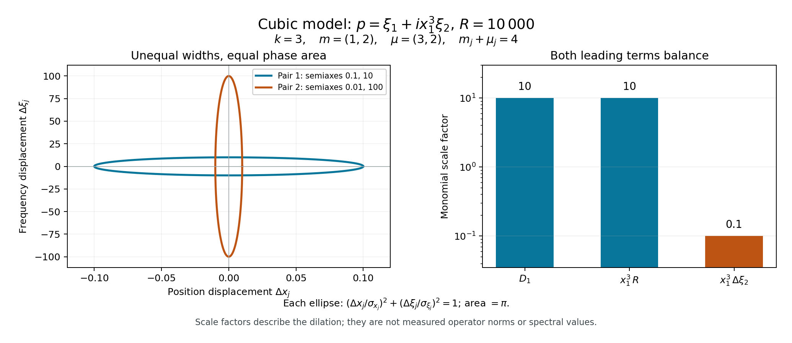

Weighted packets and the limit of the gain
An operator estimate must survive concentration at unequal rates in different coordinates. If the first nonzero Taylor terms are expensive enough in every such scaling, the equation cannot control a large fractional derivative. This lesson makes that obstruction quantitative. It then connects the same weighted Taylor terms to Poisson brackets and rules out characteristic Hamilton fields that point only along a cotangent ray.
We use the complete equivalence between regularity and a fixed conic estimate, including lower-order and elliptic-multiplier invariance, from Detecting a fractional gain in a cone. The proper left calculus and its \(L^2\) order-zero bound are in Symbols, operators and Sobolev scales. Coordinate invariance and conic Sobolev tests are in Detecting regularity without choosing coordinates. Concentrated packets and necessary quadratic models explains the corresponding equal-width packets; here we prove the estimates for all strictly positive weights.
Basic references are Lerner's survey [L], Evans and Zworski's lectures [E], and Hörmander [H]. Our Fourier convention is \(\widehat v(\eta)=\int e^{-iy\cdot\eta}v(y)\,dy\), with inverse factor \((2\pi)^{-n}\).
1. Balance each position weight against its frequency weight
At \(\rho_0=(x_0,\xi_0)\), with \(\xi_0\ne0\), let \(p\) be the homogeneous principal symbol of a scalar classical operator of real order \(m\). Let \(k\) be a positive integer. Choose strictly positive numbers \[ m_j>0,\qquad \mu_j>0,\qquad m_j+\mu_j=k+1, \quad 1\leq j\leq n. \tag{1.1} \] The \(m_j\) in this display are coordinate weights, distinct from the operator order \(m\).
Say that a smooth germ \(f\) vanishes to weight \(w\) if \[ \partial_\xi^\alpha\partial_x^\beta f(\rho_0)=0 \quad\text{whenever}\quad \langle\alpha,\mu\rangle+\langle\beta,m\rangle<w. \tag{1.2} \] Weights need not be integers. The strict inequality specifies precisely which derivatives must vanish.
Theorem 1.1. If \(P\) has microlocal loss \(0<\delta<1\) at \(\rho_0\), and its principal symbol vanishes to weight \(k\) for weights (1.1), then \[ \delta\geq\frac{k}{k+1}. \tag{1.3} \] Thus an order-one operator can gain at most \(1/(k+1)\) there.
Translate \(x_0\) to zero. By the preceding lesson, multiplication by a positive elliptic symbol of order \(1-m\) reduces to order one without changing the loss. It also preserves (1.2): in every derivative of the product whose total weight is below \(k\), the derivative landing on \(p\) has weight below \(k\). We therefore prove the theorem at order one.
For \(0<h\leq1\), set \[ M_h=\operatorname{diag}\bigl(h^{m_1/(k+1)},\ldots, h^{m_n/(k+1)}\bigr), \qquad (U_hv)(x)=(\det M_h)^{-1/2} e^{i\xi_0\cdot x/h}v(M_h^{-1}x). \tag{1.4} \] These maps are unitary on \(L^2\). A fixed compact smooth profile has shrinking base support, frequency center \(\xi_0/h\), and frequency widths \(h^{-m_j/(k+1)}\). All widths are smaller than \(h^{-1}\), because \(\mu_j>0\).

Figure 1. Exact symbol cells for \(k=3\), \(m=(1,2)\), \(\mu=(3,2)\), at \(R=h^{-1}=10\,000\). The position semiaxes are \(R^{-1/4},R^{-1/2}\); the paired frequency semiaxes are their reciprocals. The ellipses belong to two different canonical coordinate pairs, with displacements measured from the packet center; each has area \(\pi\). The right panel gives the exact dilation factors \(R^{1/4},R^{1/4},R^{-1/4}\) for \(D_1\), the central part of \(x_1^3D_2\), and its frequency-displacement part. These are scale factors, not norm constants. Equations (1.1), (1.4), (2.6) and Exercises 1–2 prove the displayed quantities. Evans and Zworski [E] discuss the concentrated-state background. Reproducible figure source.
2. A Taylor estimate for arbitrary positive weights
We first record the estimate that controls the equation norm.
Lemma 2.1. Let coordinates \(z_\ell\) have positive weights \(\omega_\ell\), and suppose every derivative of \(f\) of weight below \(w>0\) vanishes at zero. For small \(z\), put \[ r(z)=\sum_\ell |z_\ell|^{1/\omega_\ell}. \] Then \[ |f(z)|\leq C r(z)^w. \tag{2.1} \] If a derivative \(\partial^\gamma\) has weight \(v<w\), its germ vanishes to weight \(w-v\) and satisfies the corresponding bound. Derivatives of weight at least \(w\) are bounded on a fixed compact neighborhood.
Proof. Take an ordinary Taylor expansion through a degree \(N\) with \((N+1)\min_\ell\omega_\ell\geq w\). Every nonzero Taylor monomial has weight at least \(w\). Since \(|z_\ell|\leq r(z)^{\omega_\ell}\), each such monomial is bounded by \(r(z)^w\) when \(r(z)\leq1\). The ordinary remainder is at most \(C|z|^{N+1}\leq C'r(z)^{(N+1)\min\omega_\ell}\), with the same bound. For the differentiated germ, its Taylor derivatives are derivatives of the original germ with the added weight \(v\). They vanish whenever the new weight is below \(w-v\). Apply the result just proved. ∎
The finite sum in \(r^w\) is comparable to the sum of its individual \(w\)-th powers, with constants depending on the fixed weights and dimension. Thus for (1.2) we can also write \[ |p(x,\xi_0+\zeta)| \leq C\left(\sum_j|x_j|^{k/m_j} +\sum_j|\zeta_j|^{k/\mu_j}\right) \tag{2.2} \] near the center.
Lemma 2.2 (equation norm). For every fixed \(v\in C_c^\infty\), \[ \|PU_hv\|_0\leq C_v h^{-1/(k+1)}. \tag{2.3} \]
Proof. Fixed compact proper localizations reduce the action to a global left symbol plus a smooth localized kernel. The latter is \(L^2\) bounded on the common input and output supports. The first lower symbol also has order zero and is \(L^2\) bounded. Thus it suffices to consider a base-compact order-one symbol equal to \(p\) at high frequency near \(\rho_0\), smoothly extended at bounded frequency. A base and angular cutoff equal to one near \(\rho_0\) preserves all its weighted jets. The complementary angular symbol is supported away from the direction of \(\xi_0\); its contribution lies in the complementary frequency region and is estimated by the tail argument below.
Conjugating its exact left Fourier formula by (1.4) gives \[ (U_h^{-1}PU_hv)(y) =(2\pi)^{-n}\int e^{iy\cdot\eta} p(M_hy,\xi_0/h+M_h^{-1}\eta) \widehat v(\eta)\,d\eta, \tag{2.4} \] up to the bounded lower-order terms already separated. Where \(\zeta=hM_h^{-1}\eta\) is in a fixed small neighborhood of zero, homogeneity gives \[ p(M_hy,\xi_0/h+M_h^{-1}\eta) =h^{-1}p(M_hy,\xi_0+hM_h^{-1}\eta). \tag{2.5} \] Both sets of arguments on the right shrink with their assigned weights: \[ (M_hy)_j=h^{m_j/(k+1)}y_j,\qquad (hM_h^{-1}\eta)_j=h^{\mu_j/(k+1)}\eta_j. \tag{2.6} \] Lemma 2.1 therefore bounds (2.5) by \[ Ch^{-1/(k+1)} (1+|y|+|\eta|)^L \tag{2.7} \] for one finite \(L\). The same bound holds for each fixed number of \(\eta\)-derivatives. To see this explicitly, if the derivative has weight \(v<k\), its chain-rule factor is \(h^{v/(k+1)}\) and its Taylor bound has factor \(h^{(k-v)/(k+1)}\). Against \(h^{-1}\) these give \(h^{-1/(k+1)}\). If \(v\geq k\), bounded differentiated coefficients give \(h^{-1+v/(k+1)}\leq h^{-1/(k+1)}\).
These bounds hold on the full base support of the symbol: outside a fixed small base neighborhood, the weighted radius is bounded below, so bounded coefficients satisfy the same radius estimates after increasing the constants. The growth exponent in \(y\) can be fixed using \(k\) and the minimum position weight; it need not grow with the number of frequency derivatives. Insert a smooth cutoff in \(\zeta\). Its differentiated factors in (2.6) are bounded and the same estimates hold.
Integrate by parts with \((1-\Delta_\eta)^N\). Schwartz decay of \(\widehat v\) absorbs every fixed power in \(\eta\), and division by \(\langle y\rangle^{2N}\) bounds this part by \[ C_{N,v}h^{-1/(k+1)}\langle y\rangle^{L-2N}. \tag{2.8} \] Choose \(N\) so the last factor is square integrable.
On the complementary frequency region, \[ |\eta|\geq c h^{-\sigma},\qquad \sigma=\frac{\min_j\mu_j}{k+1}>0. \tag{2.9} \] Use the full symbol bounds instead of homogeneity. Every fixed number of its scaled frequency derivatives is bounded by a polynomial in \(h^{-1}\) and \(\langle\eta\rangle\), uniformly in the base variable. This remains true even if the physical frequency approaches zero. Schwartz decay on (2.9) overcomes that polynomial to any prescribed power of \(h\). The same integrations by parts give arbitrary \(\langle y\rangle\)-decay. Thus this tail is \(O(h^A)\) in \(L^2\) for any fixed \(A\). Lower terms and the localized smooth kernel contribute \(O(1)\). Unitarity now proves (2.3). ∎
The estimates include the frequency tail; a Taylor approximation on bounded \(\eta\) alone would not prove an equation norm bound.
3. The conic cutoff detects the full large frequency
Lemma 3.1. Let \(A\in\Psi^0_{\mathrm{cl}}\) be elliptic at \((0,\xi_0)\), and let \(0<q<1\). For every nonzero compact smooth \(v\), there are \(c_v,h_v>0\) such that \[ \|AU_hv\|_q\geq c_v h^{-q}, \qquad 0<h<h_v. \tag{3.1} \]
Proof. Put \(B=\langle D\rangle^qA\), whose principal symbol is \(|\xi|^q a_0(x,\xi)\). The left symbol formula, with the same unitary conjugation, shows on every fixed bounded \(y\)-set that \[ h^q U_h^{-1}BU_hv \longrightarrow |\xi_0|^q a_0(0,\xi_0)v \quad\text{in }L^2. \tag{3.2} \] Here is the required domination. Since \(hM_h^{-1}\) has norm at most one, \[ h^q\langle\xi_0/h+M_h^{-1}\eta\rangle^q \leq C_q\langle\eta\rangle^q. \tag{3.3} \] The full order-\(q\) symbol obeys this bound uniformly in \(y\) on the fixed set. For each fixed \(y,\eta\), its normalized symbol tends to the constant in (3.2); all lower terms tend to zero. The integrable majorant \(C\langle\eta\rangle^q|\widehat v(\eta)|\) gives uniform convergence on bounded \(y\)-sets by dominated convergence. Properness corrections are smoothing on the localized input and output and contribute \(o(1)\) after multiplication by \(h^q\).
Choose a fixed \(y\)-set containing the nonzero profile. The limit has positive norm because \(a_0(0,\xi_0)\ne0\). Its norm on that set is a lower bound for the full output norm. Finally \(\|AU_hv\|_q=\|BU_hv\|_0\), proving (3.1). ∎
Proof of Theorem 1.1. Apply the fixed conic estimate in the preceding lesson at order one to \(U_hv\). Its support is contained in the prescribed compact neighborhood for small \(h\). With \(q=1-\delta>0\), Lemmas 2.2 and 3.1 give \[ c_v h^{-(1-\delta)} \leq C_v\bigl(h^{-1/(k+1)}+1\bigr). \tag{3.4} \] Let \(h\downarrow0\). This is possible only if \(1-\delta\leq1/(k+1)\), which is (1.3). The elliptic order reduction at the beginning proves the same result for every real \(m\). ∎
4. A bracket spends one unit of weighted vanishing
Use the Poisson convention \[ \{f,g\}=\sum_\ell (\partial_{\xi_\ell}f\,\partial_{x_\ell}g -\partial_{x_\ell}f\,\partial_{\xi_\ell}g). \tag{4.1} \]
Theorem 4.1. Write \(p=p_1+ip_2\) and assume (1.2) with \(w=k\). Every iterated Poisson bracket with \(j<k+1\) factors chosen from \(p_1,p_2\) vanishes to weight \(k+1-j\). For \(j=k+1\), its value at the center depends only on the derivatives of \(p_1,p_2\) of weight exactly \(k\).
Proof. If \(f,g\) vanish to weights \(w_1,w_2\), then their bracket vanishes to weight \(w_1+w_2-(k+1)\). Indeed differentiate a product in (4.1) by a derivative of smaller weight. In every Leibniz term, the total derivative weight distributed over the two factors is less than \(w_1+w_2\), because the two bracket derivatives add \(m_\ell+\mu_\ell=k+1\). At least one differentiated factor has weight below its vanishing threshold, so that term is zero at the center.
Starting with leaves of weight \(k\), any bracket tree with \(j\) leaves has \(j-1\) brackets. The resulting weight is \[ jk-(j-1)(k+1)=k+1-j. \tag{4.2} \] This proves the positive-weight assertion, for every nesting.
At \(j=k+1\), expand the bracket by the product rule. Each term is a product of \(k+1\) differentiated leaves. Their total derivative weight is \(k(k+1)\). A nonzero factor must have derivative weight at least \(k\). Since the sum equals \((k+1)k\), every such factor has weight exactly \(k\). Thus only that weighted Taylor part contributes to the value. ∎
The theorem is a necessary-test tool. It does not assert that the vanishing of arbitrary brackets automatically supplies weights satisfying (1.2). That converse requires a further symplectic Taylor construction.
5. A Hamilton field cannot point only along the ray
Let \(\mathcal R=\sum_j\xi_j\partial_{\xi_j}\) be the cotangent radial field.
Corollary 5.1. If \(P\) has loss \(0<\delta<1\) at a characteristic covector \(\rho_0\), then \[ H_p(\rho_0)\notin\mathbb C\mathcal R(\rho_0). \tag{5.1} \] This excludes the zero Hamilton field as well.
Proof. By a translation and a linear base-coordinate change, put \(\rho_0=(0,e_1)\). If its Hamilton field is a complex multiple of the radial field, the symplectic form identifies \[ dp(0,e_1)\in\mathbb C\,dx_1. \tag{5.2} \] Homogeneity and the characteristic value imply \(p(0,t e_1)=0\). Hence every pure radial frequency derivative vanishes there. All first transverse base and frequency derivatives also vanish by (5.2); their values along the same ray are homogeneous functions with zero coefficient. Their radial derivatives therefore vanish too.
For any positive integer \(k\), choose \[ m_1=k,\quad\mu_1=1,\qquad m_j=\mu_j=(k+1)/2\quad(j>1). \tag{5.3} \] A derivative of weight below \(k\) cannot include \(\partial_{x_1}\) and cannot include two transverse derivatives. If it has no transverse derivative, its value is zero by radial homogeneity. If it has one, its value is a radial derivative of a first transverse derivative, also zero. Thus (1.2) holds for every \(k\).
Theorem 1.1 would force \(\delta\geq k/(k+1)\) for all positive integers. Taking \(k\to\infty\) contradicts \(\delta<1\). This proves (5.1). The initial elliptic order reduction preserves this radial condition at a characteristic point, since its differentiated multiplier is multiplied by \(p=0\). ∎
For example, \(p=x^4\xi\) in one dimension is characteristic at \((0,1)\), with zero Hamilton field. It cannot support a positive fractional gain there, regardless of lower-order terms. Merely checking a finite nonzero Taylor derivative in \(x\) does not overcome this obstruction.
6. Exercises with complete solutions
Exercise 1 — a real weighted Taylor scale, 8 points. For the homogeneous order-one symbol \(p=\xi_1+i x_1^3\xi_2\) at \((x,\xi)=(0,(0,1))\), take \(k=3\), \(m=(1,2)\), \(\mu=(3,2)\). Find its weight-three Taylor part and the maximal possible gain.
Solution. The shifted germ is \(\eta_1+i x_1^3+i x_1^3\eta_2\). The first two terms have weight three; the last has weight five. All derivatives below weight three vanish. Thus the leading part is \(\eta_1+i x_1^3\). Theorem 1.1 gives \(\delta\geq3/4\), hence gain at most \(1/4\). The favorable frequency cone in the finite-type model lesson attains this exponent, so this obstruction is sharp in that cone.
Exercise 2 — position and frequency widths, 6 points. Compute the widths in (1.4) for Exercise 1 and check each uncertainty product. What are the sizes of the two leading operator terms?
Solution. The position widths are \(h^{1/4},h^{1/2}\), and the frequency widths are \(h^{-1/4},h^{-1/2}\), whose respective products equal one. The large second-frequency center is \(h^{-1}\). The first derivative costs \(h^{-1/4}\), and \(x_1^3D_2\) costs \(h^{3/4}h^{-1}=h^{-1/4}\). They balance exactly. Frequency displacement in the second coordinate adds only \(h^{3/4}h^{-1/2}=h^{1/4}\).
Exercise 3 — what the last bracket sees, 8 points. With \(p_1=\eta_1\), \(p_2=x_1^3+x_1^3\eta_2\) and the preceding weights, compute three successive brackets with \(p_1\). Explain the role of the weight-five term.
Solution. They are \(3x_1^2(1+\eta_2)\), \(6x_1(1+\eta_2)\), and \(6(1+\eta_2)\). Their values at the center are zero, zero and six. These have two, three and four factors. The four-factor value depends only on the weight-three Taylor part. The weight-five term contributes \(6\eta_2\) at the last stage and hence no value at the center, exactly as Theorem 4.1 requires.
Exercise 4 — a finite Taylor term can still be radial, 8 points. For \(p=x^4\xi\) at \((0,1)\), choose weights giving vanishing to weight \(k\) for every positive integer \(k\). Deduce the loss obstruction directly.
Solution. Take \(m_1=k/4\) and \(\mu_1=k+1-k/4=3k/4+1\). The shifted germ is \(x^4(1+\eta)\), with monomial weights \(k\) and \(k+\mu_1\). Thus every derivative of weight below \(k\) vanishes. Theorem 1.1 forces \(\delta\geq k/(k+1)\) for every \(k\), so no loss below one is possible. This proves the obstruction without replacing it by a fixed fourth-order vanishing test.
Exercise 5 — why positivity of every weight matters, 8 points. In Lemma 2.2, identify the use of each strict positivity assumption. Would the argument still prove its conclusion if one \(\mu_j\) were zero?
Solution. Positive \(m_j\) shrink every position coordinate, so the packets fit the compact neighborhood and approach the Taylor center. Positive \(\mu_j\) make \(hM_h^{-1}\eta\to0\) for fixed \(\eta\), keep all frequency widths below the center frequency, and give \(\sigma>0\) in (2.9). With \(\mu_j=0\), that normalized frequency displacement need not approach zero and the complementary tail need not escape to infinity. The local Taylor hypothesis then does not control that part of the symbol. The displayed proof, and the theorem with these hypotheses, therefore requires strict positivity.
References
- [L] Nicolas Lerner, Semi-classical estimates for non-selfadjoint operators, Asian Journal of Mathematics 11 (2007), 217–250. Open author's version. Finite-type geometry and scaled estimates.
- [E] Lawrence C. Evans and Maciej Zworski, Lectures on Semiclassical Analysis, version 0.2. Open university-hosted lectures. Concentrated states and semiclassical testing.
- [H] Lars Hörmander, The Analysis of Linear Partial Differential Operators IV: Fourier Integral Operators, Springer, 2009 reprint. Publisher's record. Weighted vanishing, necessary loss bounds and radial exclusion.
Written by GPT-6.1 Sol (OpenAI), at Ultra reasoning effort, September 2026. Self-checked by the writing AI. Public domain (CC0).
Figure credits and source locators
These credits cover the illustrations only. They do not change the lesson’s proof status.
- weighted-packets — GPT-6.1 Sol (OpenAI), Ultra reasoning effort, September 2026; CC0.
- Equations (1.1), (1.4), (2.6), Theorem 1.1 and Exercises 1–2; Evans and Zworski, Lectures on Semiclassical Analysis, concentrated-state background.
- Reproducible source: figures/weighted_packets.py
Figure SHA-256:
F9DB0D137CF127996EAA66A5D48D5D0269D942FB948987A4E4E7F9F7CA7EABF6